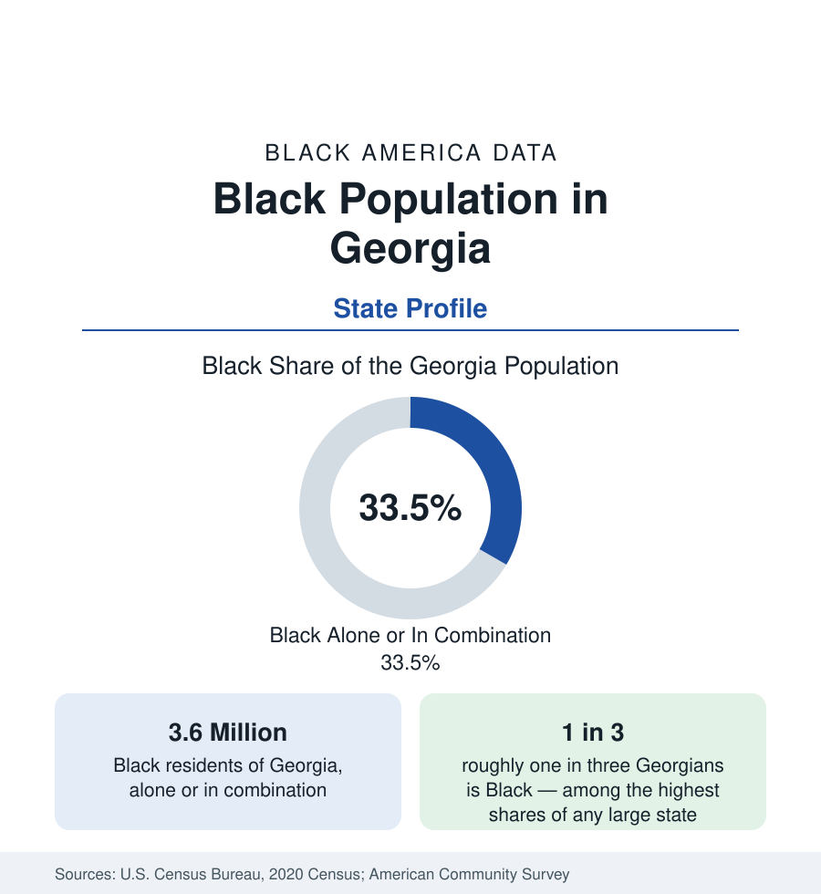

Black Census
Black Population in Georgia: One in Three Georgians
About 3.6 million Black Georgians — roughly one in three residents — make Georgia one of the most Black states in the union by share and by scale. The census profile.

Georgia is the state where Black America's scale and share coincide most completely. The decennial census counted about 3.6 million Black Georgians — Black alone or in combination — roughly one in three residents of the state, with Black alone at about 3.3 million, or 31 percent. No other large state combines so large a Black population with so high a Black share, and the combination shapes everything in the Georgia data: its politics of place, its business landscape, its college map, and its position at the center of the modern Black migration to the South. This article profiles the population in the census record.
The Black Belt and the Cities
Georgia's Black geography has two layers. The older layer is the Black Belt: the band of rich-soil counties running across the state's midsection, from Augusta through Macon to Columbus and down into the southwest around Albany, where enslaved labor worked the cotton economy and where Black population shares remain the state's highest — many of these counties are majority Black today. The newer layer is metropolitan Atlanta, which holds more than half of all Black Georgians and is profiled in full in the cities section of this reference. Between them sit mid-sized Black population centers — Savannah on the coast, Augusta on the South Carolina line, Macon and Columbus in the Black Belt itself, and Athens in the northeast — each with Black shares at or above the state figure.
Historical Roots
Georgia was the last of the original colonies to legalize slavery and then built one of the largest enslaved populations in the South; by the Civil War, nearly half of Georgians were enslaved. The Sea Islands and the Savannah coast hold the Gullah-Geechee communities, descendants of West Africans whose language and culture retained unusually direct African continuities, now recognized in a federally designated cultural heritage corridor. Emancipation, land struggles, and the long Jim Crow era pushed generations of Black Georgians north in the Great Migration, yet Georgia, like Texas, retained a very large Black population throughout — the base on which the modern return migration has built.
The Return Migration's Capital State
No state has gained more from the New Great Migration than Georgia. Census migration data show Black movers arriving from New York, Florida, Illinois, and California, overwhelmingly to metro Atlanta and its suburbs, making Georgia's Black population one of the fastest-growing in the nation in absolute terms. The arrivals are disproportionately college-educated and higher-income relative to the existing population — the selective pattern documented in the migration articles of this section — which has lifted Georgia's Black attainment and income medians even as the Black Belt counties record some of the state's most difficult economic data. Both movements are in the numbers, and profiles that quote only the state average conceal each of them.
Composition
Georgia's Black population is anchored institutionally by the largest concentration of historically Black colleges in the country: the Atlanta University Center consortium, Savannah State, Fort Valley State, and Albany State among them. Black Georgians record educational attainment above the national Black average, driven by the Atlanta metro. The foreign-born share of Georgia's Black population — Caribbean and African communities concentrated in Atlanta's eastern suburbs — is among the highest in the South. Age structure is favorable: the Black population is younger than the state's overall population, sustaining growth even where migration slows.
Reading the Georgia Numbers
Georgia rewards the two-measure discipline this reference applies everywhere: share and scale. By share, Georgia at roughly one in three is exceeded among states only by Mississippi and Louisiana and by the District of Columbia as a city jurisdiction; by scale, its 3.6 million rank near the very top. Averages require the most care of all here, because the state's Black average blends a booming, credentialed metropolitan majority with a rural Black Belt whose indicators resemble the Deep South's hardest counties. The state profiles in this section are built to keep those layers separate, and Georgia is the reason why.
Georgia's profile is the template case for the state series in this section: a state where the Black population is at once an old population, rooted in counties its families have inhabited for two centuries, and a new one, arriving by the tens of thousands to a metropolitan region that now defines Black America's center of gravity as much as any place in the country.
More in Black Census
The Black Population of the United States: Size, Definitions, and Distribution
The Black population of the United States totals 52.8 million — 15.4 percent of the nation. How the Census Bureau defines and counts the population, and where it lives.
Black Median Household Income in the United States
Black median household income stands at $56,490 in the Census Bureau's annual income report — how the figure is measured, how it compares, and what drives it.
The Black Poverty Rate: Levels, Children, and the Long Trend
The official Black poverty rate is 17.1 percent — against 11.1 percent nationally and 7.7 percent for non-Hispanic White Americans. How poverty is measured and what the data show.
Source: U.S. Census Bureau, 2020 Census; American Community Survey; Population Estimates Program.